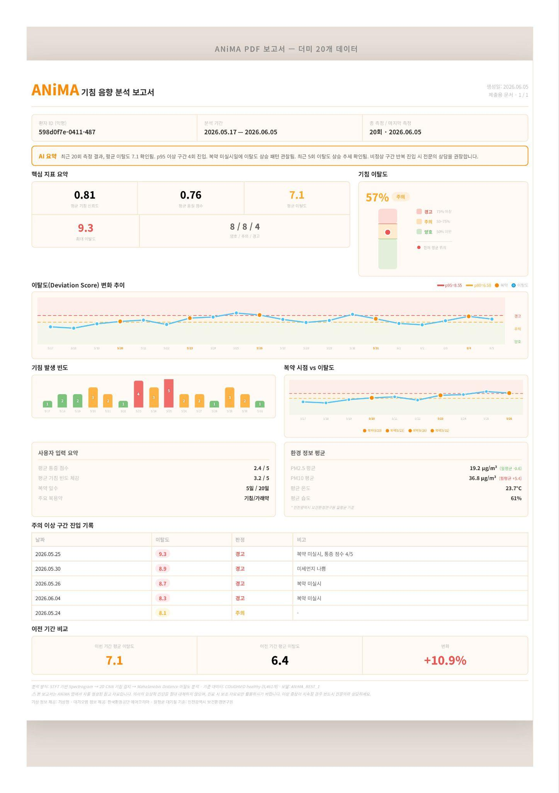

01
기침 녹음
모바일 앱에서 소리를 녹음합니다. 측정 시점과 사용자가 남긴 정보가 기록의 시작점이 됩니다.
AUDIO INPUT기침을 녹음하고, 분석 결과와 지난 기록을 한곳에서.
ANIMA는 음향 특징의 차이를 계산하고
시간에 따른 기침 패턴의 변화를 살펴보는 프로젝트입니다.
연구·교육용 프로토타입 · 질병을 진단하는 서비스가 아닙니다.
기침을 기록하고음향과 측정 맥락을 함께
소리의 특징을 비교하고연구용 참조 분포를 기준으로
시간의 흐름으로 살펴봅니다한 번의 결과에서 누적 기록으로
“지난번과 비교하면
무엇이 달라졌을까?”
기침은 일상적으로 발생하지만, 언제 어떤 소리가 났는지 기억만으로 비교하기는 어렵습니다. ANIMA는 녹음한 소리와 분석 결과를 남겨, 이전 기록을 다시 확인할 수 있도록 합니다.
음성을 입력하면 기침 여부를 판별하고, 기침으로 확인된 소리의 특징을 연구용 참조 분포와 비교합니다. 결과는 리포트와 날짜별 이력으로 이어집니다.
중간발표에서는 모바일 녹음·업로드, 변화 분석, 기록 조회와 PDF 보고서 화면을 제시했습니다. 수행일지에는 웹 데모 구축과 앱 알파 테스트도 기록되어 있으며, 웹 기능과 하드웨어 보완을 이어갑니다.
중간발표 및 2026.06.23~08.26 수행일지 기준
중간발표에 담긴 실제 개발 화면입니다.
사용자는 녹음하고, 결과를 확인하고,
이전 기록을 다시 살펴볼 수 있습니다.

앱에서 소리를 녹음해 서버로 보냅니다. 서버는 입력 음향을 분석하고 기침 감지 여부와 결과를 돌려줍니다.
원본 크게 보기 ↗
기침 음향의 차이를 점수와 그래프로 확인합니다. 녹음한 소리를 다시 듣고, 기록을 PDF로 저장하는 화면도 구현했습니다.
원본 크게 보기 ↗
기침이 감지된 기록과 감지되지 않은 기록을 확인하고, 누적된 음향 지표의 흐름을 살펴봅니다.
원본 크게 보기 ↗화면은 중간발표 당시의 시연 예시입니다. 표시된 수치와 ‘양호·주의·경고’ 문구는 임상적 건강 상태나 질병 위험도를 판정하는 기준이 아닙니다.
앱 안의 결과를 다시 살펴볼 수 있도록 PDF 보고서 기능을 구현했습니다. 발표자료의 보고서 예시는 측정 기간과 핵심 지표, 시간에 따른 변화 등을 함께 배치합니다.
오른쪽 보고서는 더미 데이터 20건으로 구성한 예시입니다. 임상 성능 검증 결과나 실제 사용자 분석 결과로 제시하지 않습니다.
PDF 보고서 화면 원본 보기 ↗
기침을 판별하는 첫 단계와 음향적 차이를 계산하는 두 번째 단계를 연결한 분석 파이프라인입니다.
전처리와 STFT를 거쳐 CNN 모델로 기침 여부를 판별합니다.
기침의 특징 벡터를 추출해 거리와 이탈도 점수를 계산합니다.
모바일 앱에서 소리를 녹음합니다. 측정 시점과 사용자가 남긴 정보가 기록의 시작점이 됩니다.
AUDIO INPUT16kHz 모노 형식으로 정리하고, 녹음 길이와 잡음·클리핑 등 분석에 영향을 주는 조건을 확인합니다.
16 kHz / MONOSTFT와 스펙트로그램으로 소리를 시간·주파수 정보로 바꿉니다. 소리의 특징을 모델이 읽을 수 있게 합니다.
STFT / SPECTROGRAM2D CNN 기반 모델로 입력 소리의 기침 여부를 판별합니다. 모델의 기침 판별 신뢰도도 함께 확인합니다.
COUGH CLASSIFICATION기침의 특징을 숫자 벡터로 추출합니다. 연구용 참조 분포와의 마할라노비스 거리를 계산하고 이탈도 점수로 표현합니다.
MAHALANOBIS DISTANCE분석 결과를 날짜별로 저장하고, 여러 시점의 변화를 살펴봅니다. 단일 수치와 기록의 맥락을 함께 봅니다.
HISTORY / TRENDS분석의 기준도 함께 고려합니다. 모델과 참조 분포의 버전이 달라지면 결과를 비교할 때 이를 함께 고려해야 합니다.
지표의 의미 알아보기 ↗기침인지, 분석하기에 적절한 녹음인지, 참조 데이터와 얼마나 다른지. 각각 다른 질문에 답하는 지표입니다.
현재 분석은 공개 데이터의 healthy_cough 표본으로 구축한 연구용 참조 분포를 활용합니다. 6월 수행일지에는 해당 표본 추가 수집과 참조 분포 도구 개선이 기록되어 있습니다.
개인별 기록으로 자체 참조 분포를 만드는 기능은 향후 계획입니다. 현재의 참조 분포와 구분해야 하며, 어느 경우에도 임상적 정상 범위를 뜻하지 않습니다. 그림은 설명용 개념도입니다.
COUGHVID 데이터셋 논문 ↗분석 결과에 복약 시점과 사용자 입력, 환경 정보를 연결하는 구조입니다. 아래 항목은 기획안과 보고서 예시에 담긴 기록 범위이며, 각 외부 데이터 연동의 운영 상태를 뜻하지 않습니다.
모바일에서 시작된 소리가 서버의 분석을 거쳐, 다시 사용자가 읽을 수 있는 기록으로 돌아옵니다.
녹음 · 결과 조회 · PDF · 히스토리
Flutter
전처리 → 품질 확인 → 기침 판별 → 분포 비교
Python · FastAPI · 2D CNN
날짜별 결과 · 음성 파일
관계형 DB · Audio Storage
STFT · Spectrogram
Mahalanobis Distance
Seeed Studio XIAO nRF52840 Sense · BLE
MCU 보드 테스트 진행 · 감지·전송 확장 연구
HTML · CSS · JavaScript
GitHub Pages
앱·서버 분석과 기록 저장은 중간발표의 구현 범위입니다. 저장소 세부 구성은 기획안의 MySQL·S3 설계와 구분해 관리합니다. 이 소개 페이지 자체는 음성을 수집하거나 분석하지 않습니다.
분석 목표부터 테스트 환경까지.
개발 중 만난 문제를 기준으로
시스템을 다시 다듬었습니다.
초기 질병 분류 방향은 프로젝트의 활용 범위와 의료적 판단의 경계를 모호하게 만들었습니다.
목표를 기침 패턴의 변화 추적으로 정리하고, 데이터셋과 분석 파이프라인을 재구성했습니다. 기침 여부 판별과 참조 분포 비교를 연결했습니다.
Flutter 녹음 패키지가 에뮬레이터에서 정상 동작하지 않아 녹음 기능 테스트에 제약이 있었습니다.
실기기 개발 환경으로 전환해 녹음과 앱 기능을 테스트했습니다. 이후 앱 알파 테스트에서 개선사항을 정리했습니다.
무료 서버의 슬립 이후 첫 요청 지연과 분석 메모리 부족이 발생했습니다. 앱·서버·DB의 필드명과 엔진 버전도 맞춰야 했습니다.
상시 실행하는 클라우드 환경으로 옮기고, 모델과 기준 분포 도구를 교체했습니다. 음성 파일을 별도로 저장하는 서버 구조도 마련했습니다.
중간발표 13~15쪽, 수행일지 3월 10일·6월 2일·6월 23일 기준. 응답 속도나 모델 정확도의 정량 개선 수치는 자료에 제시되지 않았습니다.
최신 수행일지의 다섯 명이
AI·서버·앱·웹·하드웨어를
나누어 개발합니다.
기획 · AI · 학술 · 하드웨어기획·문서 작업, 데이터 전처리와 AI 모델 개발, 학술지 작성과 하드웨어 구현을 담당합니다. 참조 분포 도구 개선과 MCU 보드 테스트를 진행했습니다. IRB 승인 신청서 검토는 향후 계획에 포함되어 있습니다.
서버 구축 · 데이터 라벨링 · 앱·웹 서버앱·웹과 AI 분석 기능을 연결하는 서버를 구축합니다. 모델·참조 분포 도구 교체, 음성 저장 서버 구성, 데이터 라벨링과 서버 보완을 담당합니다.
UX·UI · DB 설계 · 앱·웹 · 대시보드UX·UI와 데이터베이스, 프런트엔드를 담당합니다. PDF·녹음 재생 기능과 웹 데모를 개발했으며, 웹 기능을 개발하며, 대시보드 백엔드·DB 설계를 계획하고 있습니다.
데이터 라벨링 · 프로젝트 소개 · 파일·소스 관리기침·비기침 데이터 라벨링과 일상 노이즈 수집에 참여했습니다. GitHub README와 HTML 소개 페이지를 제작하고, 소개글 보완과 파일·소스 관리를 다음 작업으로 계획하고 있습니다.
웹·대시보드 디자인 · 앱 테스트 · 사용성 피드백웹 화면과 앱 로고를 디자인하고, 앱 알파 테스트 후 개선사항을 정리했습니다. 웹 디자인과 사용자 관점의 피드백을 담당하며, 대시보드 디자인을 계획하고 있습니다.
2026.08.26 수행일지의 팀 구성과 담당 분야를 반영했습니다.
구현한 기능과 진행 중인 작업,
아직 연구가 필요한 계획을
구분해 소개합니다.
중간발표와 2026.08.26까지의 수행일지 기준입니다. 공개 서비스 운영 여부나 임상적 유효성을 확인한 결과는 아닙니다.
API 구현 완료를 기록하고, 프런트엔드·DB 설계와 기침 데이터 분류 도구를 개발했습니다.
AI 모델과 기준 분포 도구를 교체하고 음성 저장 서버를 분리했습니다. 기침 데이터 라벨링 완료도 기록했습니다.
웹사이트 데모를 구축하고, 앱 알파 테스트에서 개선사항을 정리했습니다.
웹페이지와 소개 콘텐츠, 서버 작업을 이어갔습니다. MCU 보드를 테스트하고 대시보드 확장 계획을 세웠습니다.
기침 기록의 축적과 사용 경험 개선을 중심으로 앱·웹을 고도화합니다.
현재 공개 데이터 기반 참조 분포와 개인별 분포 생성 계획을 구분합니다. 데이터 수집에 필요한 연구윤리·동의 절차는 별도 검토 과제입니다.
8월 26일 수행일지에는 기침 기록 외에 산업 현장의 소리를 다루는 연구 계획이 추가되었습니다.
향후 주차별 계획에 기재된 항목입니다. 현장에 배포했거나 성능을 검증한 산업용 제품으로 소개하지 않습니다.
ANIMA는 기침 음향의 변화 양상을 기록하고 비교하는 연구·교육용 프로토타입입니다. 소개된 화면과 분석값은 의학적 진단이나 치료 판단을 위한 결과가 아닙니다.
이곳은 ANIMA의 연구 목적, 분석 설계와 팀을 소개하는 페이지입니다. 음성을 녹음하거나 업로드하지 않으며, 분석 서버에 연결되어 있지 않습니다.
이탈도는 참조 분포와의 음향적 차이입니다. 질병 위험도나 중증도가 아니므로 이 수치만으로 건강 상태를 판단할 수 없습니다.
초기 연구용 참조 분포를 구성하는 기침 음향 데이터입니다. 현재의 공개 데이터 기반 분포와, 향후 사용자 데이터로 만들 개인별 분포는 구분합니다. 데이터의 라벨은 임상적 정상 기준을 뜻하지 않습니다.
8월 26일 수행일지에는 MCU 보드 테스트가 기록되어 있습니다. 기침 이벤트 감지, BLE 연동과 통합 테스트는 개발·확장 과제이며, 공개 배포된 웨어러블 제품은 아닙니다.
아직 향후 확장 계획입니다. 8월 26일 수행일지에는 기계음 데이터 확보, AI 학습, 산업용 대시보드·서버 테스트와 하드웨어 제작 계획이 담겨 있습니다. 완료된 기능이나 상용 서비스로 소개하지 않습니다.
프로젝트 소개 README와 이 정적 웹페이지가 있습니다. 모바일 앱이나 AI 분석 서버의 실행 코드를 배포하는 저장소는 아닙니다. 저장소 보기 ↗